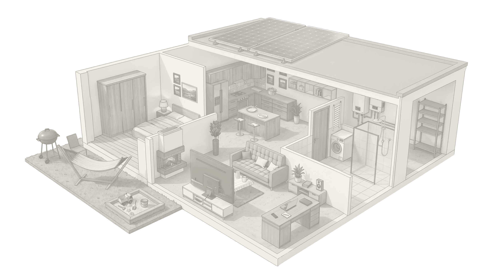

Udział Chin w polskim imporcie
Państwo Środka wprowadziło się do naszych domów na dobre. Pytanie nie brzmi już „czy”, ale jak bardzo jesteśmy uzależnieni od chińskich produktów. Nasi analitycy przeanalizowali dane importowe dotyczące przedmiotów, z których korzystamy na co dzień. Zobacz, czy jesteś w stanie urządzić swoje mieszkanie bez produktów z Chin i z jakimi konsekwencjami się to wiąże.
Zapraszamy na spacer po naszym wirtualnym domu. Zobaczmy, jaka jest szansa, że przedmioty, które do niego kupiliśmy, będą pochodzić z Chin.
Przed budynkiem możemy zobaczyć sprzęt ogrodowy. Jeżeli zdecydujemy się na zakup importowanego produktu, mamy blisko 50 proc. szans, że będzie on pochodził z Chin. W produkcji tego typu dóbr wyspecjalizowały się zakłady z dwóch najbogatszych prowincji: Guangdong oraz Zhejiang. Chińczycy oferują nam wszystko: od grilli i hamaków, przez meble ogrodowe, systemy kompostowania odpadów, sprzęt do zraszania roślin, solarne oświetlenie ogrodowe, po duże i małe zabawki dziecięce, które stoją na trawnikach czy leżą w piaskownicach.
Wchodząc do środka domu, możemy dosłownie zderzyć się z kolejnym chińskim produktem. Drzwi wejściowe. Od kilku lat wzrasta liczba importowanych z Państwa Środka drzwi stalowych. W 2023 roku co piąty importowany produkt tego typu pochodził z Chin. W 2024 roku do Polski trafiło ich blisko 105 tysięcy sztuk. Import w stosunku do roku 2023 wzrósł o ponad 15 tysięcy egzemplarzy, jak donosi portal forumbranzowe.com.
Ale z Chin importujemy także drzwi wewnętrzne, drzwi przesuwne, a także okna. Chińskie są nawet te, które noszą nazwę „francuskie”, czyli sięgające od podłogi aż po sufit. Okna w naszym domu zapewne są przesłonięte chińskimi roletami elastycznymi, czyli wewnętrznymi, albo zasłonami wyprodukowanymi w Państwie Środka.
Informacje o jakości wspomnianych produktów nie są łatwo dostępne. Testów konsumenckich w Polsce nie było, można jednak oprzeć się na opiniach tych, którzy te produkty nabyli lub znają sekrety produkcji.
Użytkownicy serwisu społecznościowego Reddit, dzieląc się doświadczeniami z remontów na grupie „HomeImprovement”, zdecydowanie potwierdzają konkurencyjność pod względem ceny. Jeden z nich zastanawiał się, czy nie warto sprowadzić z Chin przesuwanych drzwi. Producenci z USA proponowali mu pięć sztuk za 12 tys. dolarów, a podobne drzwi sprowadzone z Chin kosztowałyby dosłownie jedną dziesiątą tej kwoty. Tylko czy warto?
Na to pytanie odpowiedział inny użytkownik, który, jak twierdził, prowadzi biuro w Foshan, gdzie kupuje aluminiowe okna i drzwi na zlecenie deweloperów oraz architektów wnętrz z innych państw. Produkty chińskie ocenił dobrze, ale radził, aby najpierw dokładnie sprawdzać rozmiary profili aluminiowych, z których będą wykonane drzwi. Chińczycy lubią oszczędzać na grubości, tym samym skracając żywotność produktu.
Sugerował także, aby unikać tamtejszych okuć, zawiasów oraz klamek, ponieważ te mają słabszą jakość. Radził, aby zamawiając drzwi czy okna, prosić o użycie w nich części importowanych. Problemem może okazać się także samo wykończenie okien czy drzwi, bo jak zaznaczył, „chińskie standardy izolacji i wykończenia znacznie różnią się od zachodnich”.
Dodał: „Ogólnie rzecz biorąc, ceny chińskich aluminiowych okien i drzwi są bardzo przystępne. Współpracując z najlepszym dostawcą, można uzyskać niesamowitą jakość, ale cena to odzwierciedli”. A zatem lepsza jakość oznacza wyższą cenę produktu. To odnosi się nie tylko do okien i drzwi, ale do większości towarów zamawianych w Chinach.
W zależności od kwoty, jaką jesteśmy gotowi zapłacić, możemy uzyskać produkt o skrajnie różnej jakości: od najniższej do najwyższej. Wystarczy zaznaczyć zapotrzebowanie przy składaniu zamówienia, a producent użyje innych materiałów lub podzespołów do produkcji tego samego przedmiotu.
Co ciekawe, bazując na doświadczeniu użytkowników Reddita, nawet przy produktach wyższej jakości, a więc droższych, nadal opłaca się złożyć zamówienie w Chinach. Za cenę jednych drzwi w USA można kupić tam kilka par.
Co więcej, Chińczycy przekonują, że są w stanie dostarczyć produkt szybciej niż zakłady w Polsce. U nas po złożeniu zamówienia przeciętnie czeka się około dwóch, trzech tygodni, a w sezonie nawet dłużej. Na produkt z Państwa Środka, jak obiecują strony internetowe producentów, trzeba czekać od 10 do 15 dni od momentu ustalenia szczegółów i wykonania przelewu, czyli oszczędza się jedną trzecią czasu.
Wróćmy do naszego domu i wejdźmy do środka. Podłogi i ściany też mogą być wykonane ze sprowadzanych z Państwa Środka płytek. Importowane wyroby ceramiczne są nawet o jedną czwartą tańsze niż te produkowane w Polsce.
Jednak w 2008 roku, jak informowała Gazeta Prawna, jedna z partii sprowadzona na prywatne zlecenie zagrażała życiu i zdrowiu użytkowników. Wykryte promieniowanie potasu 40, radu 226 i toru 228, pierwiastków badanych sumarycznie, było nawet dwukrotnie większe od dopuszczalnego.
Jeśli ktoś nie zdecydował się na ceramikę, może chodzić po parkietach drewnianych, również sprowadzanych z Chin.
Jeśli w domu mamy fotowoltaikę, to prawie na pewno korzystamy ze sprzętu wyprodukowanego w prowincjach Zhejiang, Jiangsu i Guangdong. W Państwie Środka powstaje ponad 80 proc. globalnej produkcji paneli fotowoltaicznych. Jak podaje portal Wysokie Napięcie, ponad 95 proc. instalowanych w Unii paneli PV jest importowanych z Chin. Ich niskie ceny zachęcają do inwestowania w fotowoltaikę. Podobnie jest z osprzętem.
Zajrzyjmy na chwilę do pomieszczenia gospodarczego. Żeby korzystać z prądu produkowanego przez panele, potrzebne są falowniki. Według portalu Wysokie Napięcie w 2024 roku aż 80 proc. nowo instalowanych falowników w Europie pochodziło z Chin. Choć to może się niedługo zmienić, ponieważ Komisja Europejska chce ograniczyć import tych urządzeń. Powodem jest bezpieczeństwo europejskich sieci energetycznych.
Stojące w pomieszczeniu bojlery czy podgrzewacze wody również mogą być wyprodukowane w Chinach. Stamtąd sprowadzamy również grzejniki.
Wszystkie meble, takie jak szafa w przedpokoju, stół w salonie, krzesła, wyposażenie garderoby, łóżka w sypialni, szafki w kuchni oraz szafki w łazience - to wszystko z wysokim prawdopodobieństwem pochodzi z Chin.
Według raportu Departamentu Analiz Ekonomicznych banku PKO BP w 2024 roku niemal co drugi importowany do Polski mebel, dokładnie 41,6 proc., pochodził z Chin. Produkuje się tam wszystko: stoły, krzesła, łóżka, szafy, meble tapicerowane, dziecięce, ogrodowe, kuchenne, regały garażowe i inne. Na specjalne zamówienie można również dostać reprodukcje mebli zabytkowych lub stylizowanych na zabytkowe.
Chcesz mieć meble à la Ludwik XIV czy XVI? Zrobią je chińscy robotnicy.
Do niedawna była pewna szansa, że w tych meblach jest pewien polski element. Jeszcze dwa lata temu prawie jedna piąta eksportowanego z Polski drewna trafiała do Chin. W trzech pierwszych kwartałach zeszłego roku ta liczba spadła o połowę, a tym samym szansa, że nasze drewno wróci akurat do Polski w formie mebla, jest już znikoma.
Cena? Znowu zależy od jakości, ale może być nawet o połowę niższa niż u krajowych czy europejskich producentów.
Stoły w salonie czy w jadalni są przykryte zapewne obrusami z Chin. Poza nimi z Państwa Środka importujemy także serwetki, bieżniki na stół i temu podobne produkty.
Przejdźmy do sypialni. Znajdziemy tam chińskie tekstylia domowe: ręczniki, prześcieradła, pościel, koce. To jedne z produktów o najwyższym procencie importu.
A jak jest z jakością chińskich mebli? Tym razem użytkownicy zwracają uwagę, że zależy to nie tylko od ceny, ale i odrobiny szczęścia. Na grupie „AusRenovation” w serwisie Reddit, skupiającej się wokół wymiany doświadczeń z remontów, konsumenci z Australii omawiali chińskie meble kuchenne robione na zamówienie. Informowali, że mogą pojawiać się problemy z serwisem w razie wad produktu.
Jeden z użytkowników ostrzegał: „Jeśli wystąpi wada, Chińczycy najpierw spróbują zwrócić ci pieniądze tylko za tę uszkodzoną część. A potem obciążą cię kosztami transportu za odesłanie tej części do naprawy. (...) Nie lubią też robić pojedynczych, małych części, za które nie dostają zapłaty, więc czas oczekiwania na naprawę może być długi”.
Inny użytkownik, pracujący w firmie zajmującej się załatwianiem spraw celnych przy imporcie towarów z Chin, ostrzegał, że meble kuchenne z Państwa Środka dość często przekraczają normy chemikaliów, w tym trującego formaldehydu służącego do klejenia płyt meblowych czy używanego do impregnacji drewna difluorku amonu. Jak twierdził, w chińskich meblach kuchennych bywa wykorzystywany także rakotwórczy azbest.
Przyjrzyjmy się teraz AGD. W naszym otoczeniu jest znacznie więcej chińskich produktów tej kategorii, niż się spodziewamy. Nieświadomie taki towar można też kupić od naszych rodzimych firm, ukryty pod ich marką. W Polsce w ten sposób działa kilku producentów. Zasada jest następująca: w kraju tworzy się logo, projektuje opakowanie, a produkty z wymalowaną na nich nazwą zamawia się w Chinach. Jedynie wnikliwi zobaczą napisane na spodzie małymi literkami „made in China”.
Dodatkowo proces wsparła globalizacja. Przykładem jest słoweńska marka AGD Gorenje, która produkuje blisko jedną czwartą sprzętu w Europie. Osiem lat temu przeszła w ręce Chińczyków i obecnie należy do koncernu Hisense Group z siedzibą w Qingdao (prowincja Szantung), znanego producenta telewizorów, już pod oryginalnym logo.
Przebojem weszła do Europy i tu stworzyła swoje fabryki chińska firma Haier, również mająca główną siedzibę w Qingdao. Firma kiedyś kupowała licencje od niemieckiego producenta lodówek, potem go wykupiła, aż w końcu zdobyła szturmem świat. Ma swoje fabryki nie tylko w Europie. W 2011 roku wykupiła od przeżywającej kłopoty firmy Panasonic markę Sanyo, w tym jej zakłady produkcyjne oraz centra badawcze.
Zerknijmy jeszcze na telefon i tablet leżący na naszym chińskim biurku. Załóżmy, że chcemy uniknąć typowo chińskiego produktu jak Xiaomi albo HUAWEI, kupując nowy smartfon Motoroli, czyli amerykańskiego pioniera technologii telekomunikacji bezprzewodowej. Tymczasem od kilku lat firma i jej logo są w posiadaniu Chińczyków. Tak samo jak odkupiona od IBM marka notebooków ThinkPad.
Gdybyś chciał teraz sięgnąć po wodę, z dużym prawdopodobieństwem nalejesz jej do szklanki z Chin. Ale z Państwa Środka importujemy nie tylko naczynia emaliowane, z których jeszcze niedawno słynął nasz przemysł. Sprowadzamy także garnki stalowe, patelnie, deski do krojenia, sztućce, talerze, kubki i szklanki.
Jakość tych produktów bywa niepewna. Tylko w pierwszym półroczu 2026 roku Główny Inspektor Sanitarny dwukrotnie ostrzegał przed wyrobami sprowadzanymi z Chin i nakazywał natychmiastowe wycofanie ich ze sprzedaży. W pierwszym przypadku chodziło o pięć rodzajów szklanek wyprodukowanych w Chinach, a sprzedawanych w znanej duńskiej sieci sklepów. Podczas ich użytkowania mogły przenikać do organizmu toksyczne metale ciężkie: ołów i kadm. W drugim wypadku GIS stwierdził obecność tych samych metali ciężkich na obrzeżu chińskich szklanek sprzedawanych w jednej z sieci dyskontowych należących do niemieckiego właściciela.
Warto też spojrzeć na badania przeprowadzone pod koniec 2025 roku przez niezależną organizację konsumentów Pro Test. Sprawdzono 162 produkty sprzedawane na platformach Temu i Shein. Wynik: aż 110 z nich nie spełnia unijnych norm. To oznacza, że dwa na trzy produkty posiadały wady lub były niebezpieczne dla użytkowników. Podobne wyniki wykazały testy przeprowadzone na zlecenie belgijskiej organizacji Testachats. W tym wypadku 70 proc. produktów kupionych na obu platformach nie spełniało norm bezpieczeństwa. Problemy zwykle były podobne: ładowarki do telefonów niebezpiecznie się przegrzewały, ozdoby i ubrania zawierały niebezpieczne metale lub trujące substancje.
Radosław Pyffel, ekspert do spraw Azji i Chin, komentuje dla Onetu: „Chiny jako kraj, w którym produkuje się tanio, nie odchodzą całkiem do przeszłości. Jednak już w poprzednich planach pięcioletnich władze postawiły na rozwój technologiczny, tworzenie samochodów elektrycznych, AI, robotyki oraz samowystarczalność technologiczną i surowcową. To oznacza, że wzrasta jakość produkowanych przez nich towarów, ich miejsce w łańcuchu dostaw również, zwłaszcza że zwracają się ku nowym rynkom tak zwanego globalnego południa, gdzie powstaje nowa klasa średnia, która będzie ich klientem”.
„Powodem obecnej pozycji Chin jest paradoksalnie między innymi chciwość koncernów zarówno amerykańskich, jak i europejskich. Jest takie chińskie przysłowie: dobry królik ma trzy nory. Koncerny amerykańskie i europejskie w pogoni za zyskiem z marży z taniej produkcji w pewnym momencie praktycznie zrezygnowały z dywersyfikacji źródeł wytwarzania dóbr. Korporacje przez dekady kierowały się wyłącznie kwestią zysku tu i teraz. Nie budowano kolejnych nor. W efekcie Chiny mają w niektórych strategicznych sektorach monopol lub prawie monopol. Teraz, żeby nadrobić stracony czas, zachodnie gospodarki będą potrzebować około 15 lat na rozwój nowych fabryk, technologii, komponentów i surowców do nich, a w tym czasie Chińczycy będą parli do przodu” - dodaje Pyffel.
Zapytany przez Onet ekspert zwraca uwagę, że proces ulepszania jakości produktów, przez który przechodzą teraz Chiny, już się w światowej gospodarce wydarzył: „Elektronika z Japonii po II wojnie światowej była synonimem słabej jakości. Potem Japończycy rozwinęli swój przemysł i wysuwali się na pozycję lidera. Ten proces zatrzymali Amerykanie. Chiny idą dokładnie tą samą drogą, od sprzętu słabej jakości do hi-tech. Ale różnica polega na tym, że nie dają się zatrzymać Amerykanom, mimo że takie próby były podejmowane. Rozwijają się dalej i wysuwają na światową czołówkę technologiczną” - ocenia Pyffel.
Jeśli komuś to nie odpowiada i będzie próbował zbudować dom i zakupić meble jedynie z polskiego drewna, a elektronikę z zachodnich części, to może i tak mieć chiński komponent: śruby i wkręty. Je również importujemy z Państwa Środka.
Jak liczyliśmy?
Pokazujemy udział Chin w polskim imporcie danej kategorii produktu. Dla każdej kategorii używamy wzoru:
import z Chin / import ogółem * 100
Dane o imporcie pochodzą z Eurostatu, z bazy Comext. Kody produktów zostały dobrane do przedmiotów widocznych na ilustracji, a wartości procentowe zaokrąglamy na etykietach do pełnych procentów.
Wynik należy czytać jako udział Chin w imporcie konkretnej kategorii, a nie jako udział w całym polskim rynku ani jako dokładny odsetek przedmiotów znajdujących się w polskich domach.


Podziękowania: Vadim Makarenko